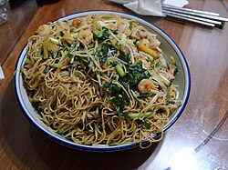

Chow Mein

Description
Chow mein is a dish of Chinese stir-fried noodles with vegetables and
sometimes meat or tofu. Over the centuries, variations of chow-mein were
developed in many regions of China; there are several methods of frying
the noodles and a range of toppings can be used. It was introduced in
other countries by Chinese immigrants. The dish is popular throughout the
Chinese diaspora and appears on the menus of most Chinese restaurants
abroad. It is particularly popular in India, Nepal, the UK, and the US.
Ingredients
- 16 oz chow mein noodles
- 1 lb boneless skinless chicken breasts
- Salt and pepper
- 3 Tablespoon vegetable oil, or canola oil
- 2 cups finely shredded cabbage
- 1 large carrot, shredded
- 2 ribs celery, chopped
- 4 green onions, chopped, white and green separated
- 3 cloves garlic, minced
- 2 teaspoons freshly grated ginger
- 1 cup fresh bean sprouts (optional)
Sauce
- 1/4 cup oyster sauce
- 1/3 cup low-sodium soy sauce
- 2 Tablespoons sesame oil
- 1 Tablespoon rice vinegar
- 1 teaspoon cornstarch
- 1 Tablespoon light brown sugar
- 1-2 teaspoons Asian Garlic Chili Sauce , for spice, optional
Steps
-
Chow mein sauce: In a small bowl, whisk the sauce ingredients together
and set aside.
-
Cook chicken: Heat a large pan or wok on high heat. Add 1 tablespoon
oil. Season chicken with salt and pepper and add to hot pan. Sauté until
cooked through, then remove to a plate.
-
Cook Veggies: Add another tablespoon of oil. Once hot add cabbage,
carrots, celery, and the whites of the chopped green onion. Stir fry
over high heat for 1-2 minutes. Add the garlic and ginger and cook for
30 seconds, then remove everything to a plate.
-
Noodles: Add last tablespoon of oil to the pan and add the noodles. Cook
for 1 minute. Add the sauce and cook, tossing to coat. Return veggies
and chicken to the pan, along with fresh bean sprouts.
- Serve immediately, garnished with green onion.
Home